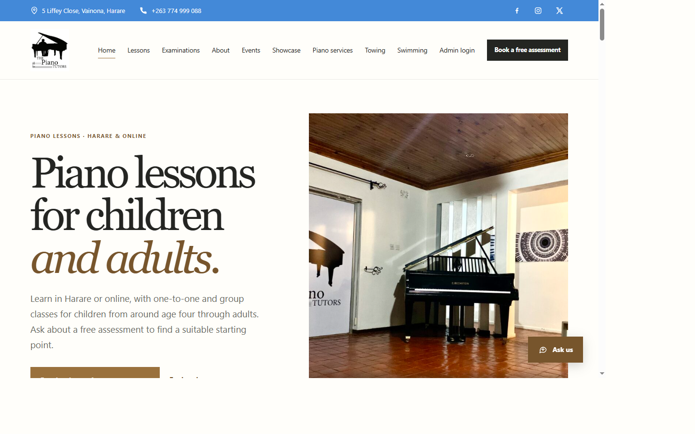

Web Development
Clear, responsive websites for businesses, churches, organisations and individuals.
- Business and portfolio websites
- Landing pages and redesigns
- Maintenance and improvements


SOFTWARE DEVELOPER · GRAPHIC DESIGNER
Turning ideas into practical digital solutions through technology and creativity.
Harare, Zimbabwe · Contact info
TAWONGA NHENDE · DIGITAL SOLUTIONS
Technology and creativity working together to bring your ideas to life. From websites and digital solutions to logos and graphic design, I help businesses and individuals establish and grow their digital presence.
Technology. Creativity. Solutions.
Through Tawonga Digital Solutions, I provide practical digital and creative services, combining technical development with thoughtful design.
WHAT I DO
Clear, responsive websites for businesses, churches, organisations and individuals.
Practical digital systems that support useful workflows and meaningful functionality.
Thoughtful visual communication for brands, events and digital channels.
SELECTED WORK
A selection of live websites and digital experiences created for organisations, businesses and communities.

A church website designed to communicate the church's identity, share information about services and events, and help visitors connect with the church community.
Visit Website ↗
A school website presenting the academy's educational approach, curriculum, events and school community, with features that support communication and engagement.
Visit Website ↗
An elegant beauty e-commerce storefront designed to showcase products, organise shopping categories and provide a simple shopping experience.
Visit Website ↗
A website for a piano tutoring business, showcasing lessons, examinations, events and additional services while making it easier for prospective students to enquire.
Visit Website ↗
A corporate website for a construction, engineering and roof waterproofing company, presenting its services, company information and project portfolio.
Visit Website ↗
An interactive web application designed to collect perspectives on judicial independence in Zimbabwe through a structured questionnaire, with privacy-conscious data collection and results access.
Visit Website ↗A LITTLE ABOUT ME
I'm Tawonga R. Nhende, a Computer Science graduate, software developer and graphic designer. I enjoy combining technology and creativity to develop practical solutions, build digital experiences and communicate ideas through design.
View my CV ↗PROFESSIONAL SNAPSHOT
LET'S TALK
Whether you need a website, a digital solution or creative design, let's discuss your project.
Get in Touch